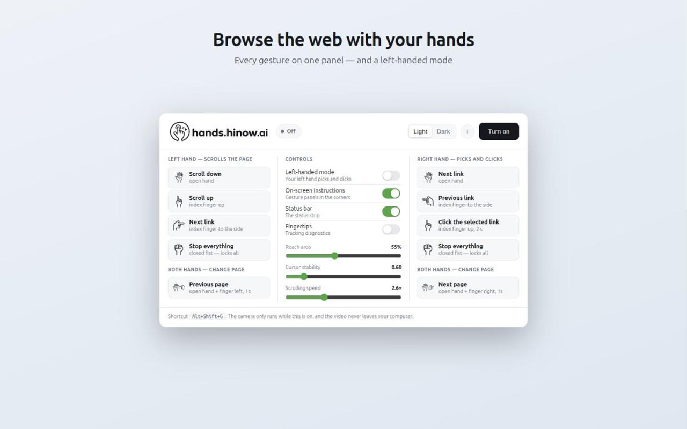
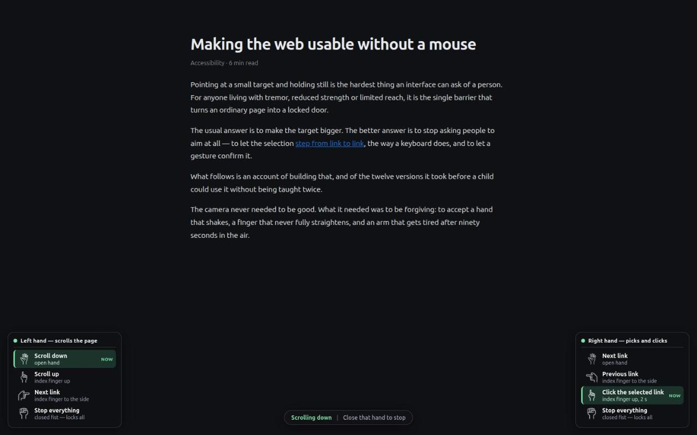
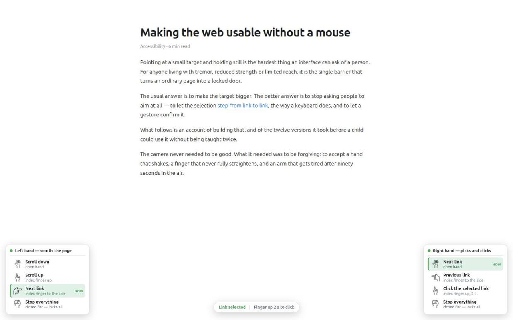
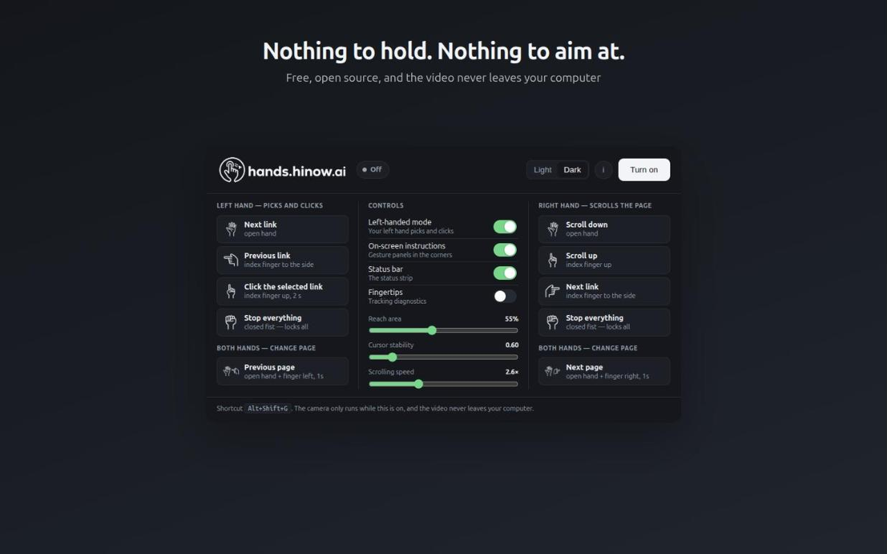
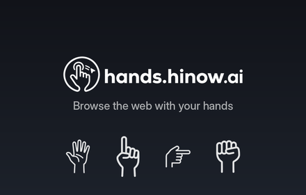

Na ordem em que o painel pede. Cada bloco tem um botão que copia o valor exato.
https://hands.hinow.ai/privacy. O texto está em
store/privacy-policy.md. A loja recusa qualquer extensão que peça
câmera sem uma URL de política acessível.
store/hands-hinow-ai-0.1.1.zip
hands.hinow.ai: Browse with hand gestures
Scroll, pick links and click with hand gestures through your webcam. Built for people who cannot use a mouse. Runs offline.
Browse the web with your hands. hands.hinow.ai turns your webcam into the pointer. Scroll a page, step through its links and click them using a few plain hand poses. No mouse, no keyboard, no touchscreen. There is nothing to hold and nothing to aim at. WHO IT IS FOR It is built first for people who cannot comfortably use a mouse: limited hand mobility, tremor, reduced strength or reach. Pointing at a small target and holding still is the hardest thing an interface can ask for, and this extension removes that task entirely: the selection steps from link to link instead. It turns out to serve anyone whose hands are busy or far from the desk as well: a speaker driving slides from across the stage, a teacher at the whiteboard, someone cooking with the recipe on screen. HOW IT WORKS One hand scrolls the page: • Open hand: scroll down • Index finger up: scroll up • Index finger to the side: next link • Closed fist: stop everything The other hand picks and clicks, without aiming: • Open hand: select the next link • Index finger to the side: go back to the previous link • Index finger up, held 2 seconds: click the selected link • Closed fist: stop everything Both hands together change page: hold one hand open and point the other to the left or right for one second. A closed fist on either hand freezes everything: the easiest pose to make is the one that stops the system. There is a left-handed mode, so the hand that picks and clicks is your dominant one. On-screen panels show every gesture and light up the one being recognized, so you always know whether the camera understood you. Light and dark themes. PRIVACY Everything runs on your own machine. The camera image is read locally and thrown away frame by frame: no video is recorded, uploaded or sent anywhere, and the extension makes no network requests at all. The hand-tracking model ships inside the extension, so it works with no internet connection. The camera only runs while the extension is switched on. FREE AND OPEN SOURCE Source code: https://github.com/hinow-ai/hands Website: https://hands.hinow.ai This is a beta. Gestures are being added one at a time, and each one only ships after it works reliably.
hands.hinow.ai: Navegue com gestos das mãos
Role a página, escolha links e clique com gestos das mãos pela webcam. Feito para quem não usa mouse. Funciona offline.
Navegue na web com as mãos. O hands.hinow.ai transforma a sua webcam no ponteiro. Role a página, percorra os links e clique neles com algumas poses simples de mão. Sem mouse, sem teclado, sem tela sensível ao toque. Nada para segurar e nada para acertar. PARA QUEM É Foi feito primeiro para quem não consegue usar um mouse com conforto: mobilidade reduzida das mãos, tremor, pouca força ou pouco alcance. Apontar para um alvo pequeno e ficar parado é a tarefa mais difícil que uma interface pode pedir, e esta extensão elimina essa tarefa: a seleção anda de link em link, em vez de exigir mira. E acaba servindo a qualquer um com as mãos ocupadas ou longe da mesa: quem apresenta slides do outro lado do palco, quem dá aula na lousa, quem está com as mãos na massa e a receita na tela. COMO FUNCIONA Uma das mãos rola a página: • Mão aberta: rola para baixo • Indicador para cima: rola para cima • Indicador para o lado: próximo link • Punho fechado: para tudo A outra escolhe e clica, sem mirar: • Mão aberta: seleciona o próximo link • Indicador para o lado: volta ao link anterior • Indicador para cima, por 2 segundos: clica no link selecionado • Punho fechado: para tudo As duas juntas trocam de página: mantenha uma mão aberta e aponte a outra para a esquerda ou para a direita por um segundo. Um punho fechado em qualquer das mãos congela tudo: a pose mais fácil de fazer é a que interrompe o sistema. Há modo canhoto, para que a mão que escolhe e clica seja a sua dominante. Os painéis na tela mostram todos os gestos e acendem o que está sendo reconhecido, então você sempre sabe se a câmera te entendeu. Temas claro e escuro. PRIVACIDADE Tudo roda na sua máquina. A imagem da câmera é lida localmente e descartada quadro a quadro: nenhum vídeo é gravado, enviado ou sai daí, e a extensão não faz requisição de rede nenhuma. O modelo de rastreamento vem dentro da extensão, então funciona sem internet. A câmera só roda enquanto a extensão está ligada. GRATUITO E DE CÓDIGO ABERTO Código-fonte: https://github.com/hinow-ai/hands Site: https://hands.hinow.ai Esta é uma versão beta. Os gestos entram um a um, e cada um só é publicado depois de funcionar de forma confiável.
É aqui que a maioria das submissões é recusada: cada permissão precisa de uma justificativa que ligue a permissão ao propósito declarado.
Let people operate web pages with hand gestures captured by the webcam, as an alternative to a mouse and keyboard.
<all_urls>The extension replaces mouse and keyboard input on whatever page the user is reading. It must draw the gesture overlay and dispatch scrolling, link selection and clicks into that page. There is no way to know in advance which sites a person who cannot use a mouse will need, so the permission cannot be narrowed to a list of domains without breaking the accessibility purpose.
Gestures are delivered only to the tab the user is actually looking at. The extension needs to know which tab is active in order to route recognized gestures to it, and to stop sending them when the user switches away.
Used together with scripting to reach the page the user is on when the extension is switched on.
Content scripts declared in the manifest only load into pages opened after installation. This permission injects the script into tabs that were already open, so that gesture control works immediately instead of requiring the user, who may not be able to use a mouse, to reload every tab.
Stores the user's own settings: theme, left-handed mode, reach area, cursor stability and scrolling speed. Nothing else is stored, and nothing leaves the device.
The camera and the hand-tracking model run in a single offscreen document. A webcam is an exclusive resource, so one instance must serve the whole browser instead of one per tab; and because the offscreen document has the extension's own origin, the camera permission is granted once for the extension rather than again on every site the user visits.
Hand tracking. Video frames are analysed on the user's machine and discarded immediately; no image is stored or transmitted. The camera is only active while the extension is switched on.
https://hands.hinow.ai/privacy





<all_urls> passa por revisão manual, e estrear sem listar
deixa você testar com um grupo antes de aparecer para todo mundo.